This document reanalyzes the ‘Quantitative Microbiome Profiles’ of Vieira-Silva et al. (2019).
library(here)
# Tools for microbiome data
library(speedyseq)
# Tools for general purpose data manipulation and plotting
library(tidyverse)
library(fs)
# ggplot helpers
library(ggbeeswarm)
library(ggridges)
library(cowplot)
library(patchwork)
library(scales)
# stats helpers
# library(broom)
library(metacal); packageVersion("metacal")
[1] '0.2.0.9009'The genus-level ‘Quantitative Microbiome Profiles’ from Vieira-Silva et al. (2019) are available for download at http://raeslab.org/software/QMP2/, and the sample metadata is available in the supplemental content at the journal site.
data_path <- here('notebook/_data/vieirasilva2019quan')
dir_create(data_path)
# Supplementary tables from the nature website; contains the metadata
fn <- path(data_path, 'supplementary-data-1.xlsx')
if (!file_exists(fn)) {
download.file(
'https://static-content.springer.com/esm/art%3A10.1038%2Fs41564-019-0483-9/MediaObjects/41564_2019_483_MOESM3_ESM.xlsx',
fn
)
file_chmod(fn, '-w')
}
# QMP proiles from the Raes lab website
fn <- path(data_path, 'qmp-matrix-genus.tsv')
if (!file_exists(fn)) {
download.file('http://raeslab.org/software/QMP2/QMP.matrix.tsv', fn)
file_chmod(fn, '-w')
}
I’ll read in the metadata and QMP profiles into a phyloseq object. The metadata is Table S1 of the Excel spreadsheet. There is an extra value in the BMI column of Table S1 that will be dropped in the import step below.
otu <- path(data_path, 'qmp-matrix-genus.tsv') %>%
read.table() %>%
as('matrix') %>%
otu_table(taxa_are_rows = FALSE)
sam <- path(data_path, 'supplementary-data-1.xlsx') %>%
readxl::read_excel(sheet = 'Table S1', range = 'A2:L174', na = "NA")
original_column_names <- names(sam)
ps <- phyloseq(
otu,
sam %>% janitor::clean_names() %>% sample_data
) %>%
rename_sample_data(
faecal_calprotectin = faecal_calprotectin_mg_g,
moisture_content = moisture_content_percent
)
stopifnot(setequal(sample_names(ps), sample_names(otu)))
sam <- ps %>% sample_data %>% as_tibble %>% glimpse
Rows: 160
Columns: 12
$ .sample <chr> "DC02", "DC03", "DC04", "D…
$ diagnosis <chr> "CD", "CD", "CD", "CD", "C…
$ age <dbl> 45, 37, 64, 52, 55, 32, 48…
$ gender <chr> "F", "M", "F", "M", "F", "…
$ bmi <dbl> 23.8, 25.4, 21.8, 20.9, 21…
$ serum_alkaline_phosphatase_u_l <dbl> 57, 62, 102, 54, 58, 50, 1…
$ faecal_calprotectin <dbl> 134.621, 281.774, 64.359, …
$ serum_crp_mg_l <dbl> 13.4, 1.8, 1.0, 0.2, 1.2, …
$ average_faecal_cell_count_cells_g <dbl> 61000000000, 8409441603, 3…
$ moisture_content <dbl> 0.731, 0.827, 0.879, 0.758…
$ dmm_enterotype <chr> "Bact2", "Bact2", "Bact2",…
$ rmp_observed_richness_n_genera <dbl> 69, 62, 86, 75, 90, 94, 77…There are 160, with the following counts by disease status,
# A tibble: 6 × 2
diagnosis n
<chr> <int>
1 CD 28
2 mHC 65
3 PSC 18
4 PSC-CD 17
5 PSC-UC 19
6 UC 13The QMP profiles are such that the sum within a sample should equal the reported cell counts per gram in the sample data; let’s check.
all.equal(sample_sums(ps), sam$average_faecal_cell_count_cells_g)
[1] "names for target but not for current"
[2] "Mean relative difference: 0.001195002"cor(sample_sums(ps), sam$average_faecal_cell_count_cells_g)
[1] 0.9999956This small difference may be down to rounding error, since apparently the entires in the QMP matrix have been rounded to integers:
It would be nice to have read counts; however, I don’t think it’s possible to obtain read counts from the available information here. Perhaps it would be possible to reverse the QMP calculation if we had the copy-number-variation information.
Since we lack read-count information, we will ignore the sequencing-count noise, which was also done in the original paper.
Our primary covariates of interest are Faecal calprotectin and moisture content.
faecal_calprotectin moisture_content
Min. : 30.00 Min. :0.5370
1st Qu.: 30.00 1st Qu.:0.7040
Median : 50.33 Median :0.7830
Mean : 205.17 Mean :0.7736
3rd Qu.: 164.08 3rd Qu.:0.8345
Max. :1800.00 Max. :0.9530
NA's :11 NA's :17 sam %>%
ggplot(aes(x = faecal_calprotectin)) +
scale_x_log10() +
geom_histogram()
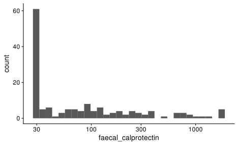
Note that a large fraction of calprotectin measurements are precisely at 30, suggesting this is a value assigned to samples that were below the detection limit of the assay. Also, the values vary over multiple orders of magnitude.
sam %>%
ggplot(aes(x = moisture_content)) +
geom_histogram()
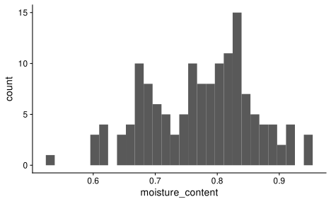
In contrast, the moisture varies relatively continuously
Let’s try to reproduce the results from the paper. We’ll focus on the Spearman correlations of the genera absolute abundances with faecal calprotectin and stool moisture content. The relevant manuscript text is
Applying QMP on the combined PSC/IBD/mHC data set, we identified 11 genera as significantly correlat-ing with faecal calprotectin concentrations (Spearman correlation, n= 149, FDR < 0.05; Fig. 3a and Supplementary Table 6). Stool mois-ture content had 45 associated taxa (Spearman correlation, n= 143, FDR < 0.05; Supplementary Table 6). Combining both variables, only 6 out of 11 positive(+) or negative(−) calprotectin associations remained significant when controlling for faecal water content vari-ation: Anaerostipes(−), Escherichia(+), Fusobacterium(+), Gemmiger(−), Streptococcus(+) and Veillonella(+) (nested linear model on QMP rank abundances, n= 133, FDR < 0.05; Fig. 3a and Supplementary Table 6).
A summary table with the Spearman results are Table S6 of the supplementary data Excel sheet,
study_res <- path(data_path, 'supplementary-data-1.xlsx') %>%
readxl::read_excel(sheet = 'Table S6', na = "NA")
qmp_spearman <- ps %>%
prune_taxa(str_subset(taxa_names(.), 'unclassified', negate = TRUE), .) %>%
as_tibble %>%
with_groups(.otu, nest) %>%
mutate(
qmp_calprotectin_spearman = map(data,
~cor.test(data = .x,
~ .abundance + faecal_calprotectin,
method = 'spearman', exact = FALSE, continuity = TRUE)),
qmp_moisture_spearman = map(data,
~cor.test(data = .x,
~ .abundance + moisture_content,
method = 'spearman', exact = FALSE, continuity = TRUE)),
) %>%
select(-data) %>%
pivot_longer(contains('spearman'), names_to = 'test', values_to = 'fit') %>%
mutate(across(fit, map, broom::tidy)) %>%
unnest(fit) %>%
with_groups(test, mutate, p.bh = p.adjust(p.value, method = 'BH'))
Compare Calprotectin results,
study_res %>%
select(Genera, starts_with('Calprotectin') & ends_with('QMP')) %>%
arrange(`Calprotectin Spearman.P QMP`) %>%
slice_head(n=12)
# A tibble: 12 × 4
Genera `Calprotectin …` `Calprotectin …` `Calprotectin …`
<chr> <dbl> <dbl> <dbl>
1 Veillonella 0.322 0.0001 0.0039
2 Streptococcus 0.279 0.0006 0.013
3 Escherichia 0.277 0.0006 0.013
4 Anaerostipes -0.267 0.001 0.0158
5 Gemmiger -0.262 0.0013 0.016
6 Oscillibacter -0.256 0.0016 0.0171
7 Butyricimonas -0.24 0.0032 0.0284
8 Fusobacterium 0.235 0.0039 0.029
9 Fusicatenibacter -0.234 0.0041 0.029
10 Coprococcus -0.22 0.007 0.0406
11 Clostridium_IV -0.22 0.0071 0.0406
12 Methanobrevibac… -0.208 0.0109 0.0571qmp_spearman %>%
filter(test == 'qmp_calprotectin_spearman') %>%
arrange(p.value) %>%
select(.otu, estimate, p.value, p.bh) %>%
slice_head(n=12)
# A tibble: 12 × 4
.otu estimate p.value p.bh
<chr> <dbl> <dbl> <dbl>
1 Veillonella 0.322 0.0000622 0.0101
2 Streptococcus 0.279 0.000570 0.0335
3 EscherichiaShigella 0.277 0.000621 0.0335
4 Anaerostipes -0.267 0.00100 0.0406
5 Gemmiger -0.262 0.00127 0.0412
6 Oscillibacter -0.256 0.00163 0.0440
7 Butyricimonas -0.240 0.00315 0.0729
8 Fusobacterium 0.235 0.00392 0.0745
9 Fusicatenibacter -0.234 0.00414 0.0745
10 Alloscardovia 0.222 0.00655 0.0957
11 Coprococcus -0.220 0.00700 0.0957
12 Clostridium_IV -0.220 0.00709 0.0957The results are similar but not identical.
Compare moisture results,
study_res %>%
select(Genera, starts_with('Moisture') & ends_with('QMP')) %>%
arrange(`Moisture Spearman.P QMP`) %>%
slice_head(n=12)
# A tibble: 12 × 4
Genera `Moisture Spea…` `Moisture Spea…` `Moisture Spea…`
<chr> <dbl> <dbl> <dbl>
1 Oscillibacter -0.581 3 e-14 2 e-12
2 Clostridium_IV -0.54 3 e-12 1 e-10
3 Blautia -0.537 5 e-12 1 e-10
4 Faecalibacterium -0.529 1 e-11 1 e-10
5 Ruminococcus -0.529 1 e-11 1 e-10
6 Fusicatenibacter -0.513 5 e-11 6 e-10
7 Coprococcus -0.51 8 e-11 7 e-10
8 Alistipes -0.496 3 e-10 2.3e- 9
9 Ruminococcus2 -0.493 4 e-10 2.9e- 9
10 Dorea -0.489 6 e-10 3.6e- 9
11 Collinsella -0.485 9 e-10 5 e- 9
12 Parabacteroides -0.45 1.7e- 8 8.8e- 8qmp_spearman %>%
filter(test == 'qmp_moisture_spearman') %>%
arrange(p.value) %>%
select(.otu, estimate, p.value, p.bh) %>%
slice_head(n=12)
# A tibble: 12 × 4
.otu estimate p.value p.bh
<chr> <dbl> <dbl> <dbl>
1 Oscillibacter -0.581 2.65e-14 4.21e-12
2 Clostridium_IV -0.540 3.26e-12 2.47e-10
3 Blautia -0.537 4.66e-12 2.47e-10
4 Faecalibacterium -0.529 1.06e-11 3.65e-10
5 Ruminococcus -0.529 1.15e-11 3.65e-10
6 Fusicatenibacter -0.513 5.49e-11 1.46e- 9
7 Coprococcus -0.510 7.52e-11 1.71e- 9
8 Alistipes -0.496 2.96e-10 5.88e- 9
9 Ruminococcus2 -0.493 4.16e-10 7.35e- 9
10 Dorea -0.489 5.74e-10 9.13e- 9
11 Collinsella -0.485 8.71e-10 1.26e- 8
12 Parabacteroides -0.450 1.74e- 8 2.22e- 7Here the estimate and p-values seem identical up to rounding, but the FDR-corrected p values differ somewhat.
Note, I filtered the OTUs that lack genus classifications prior to doing the testing, which I suspect is what was done in the original study. If these OTUs are kept, the FDR-corrected p-values are larger, due to the larger number of tests. But the study results have smaller p-values and only list the OTUs with genus names in the table.
To visualize the spearman correlation, plot and perform a linear regression on the rank-transformed values,
x %>%
with_groups(.otu, mutate,
across(c(faecal_calprotectin, .abundance), rank),
) %>%
ggplot(aes(faecal_calprotectin, .abundance)) +
facet_wrap(~.otu) +
coord_fixed() +
geom_point() +
stat_smooth(method = 'lm') +
labs(y = 'rank(abundance)', x = 'rank(faecal calprotectin)')
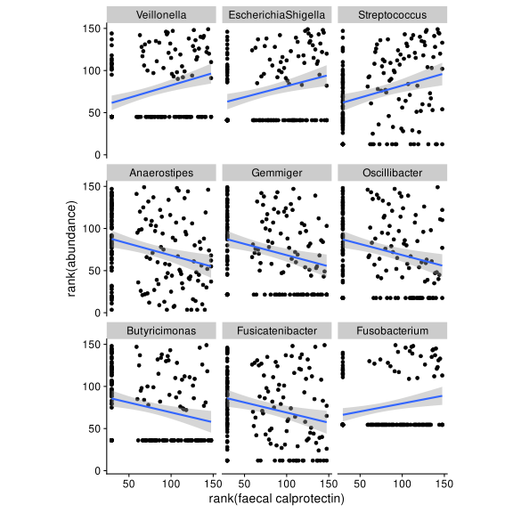
Many of the top hits have relatively low pravalence, and it appears that the correlation is being driven by differential prevalence in the two groups of samples where calprotectin has its min value, or is above its min value. For these taxa, we might expect bias to have less impact on the associations.
x %>%
with_groups(.otu, mutate,
across(c(moisture_content, .abundance), rank),
) %>%
ggplot(aes(moisture_content, .abundance)) +
facet_wrap(~.otu) +
coord_fixed() +
geom_point() +
stat_smooth(method = 'lm') +
labs(y = 'rank(abundance)', x = 'rank(moisture content)')
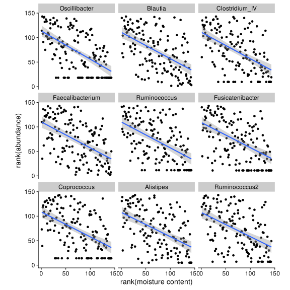
Here we instead see that top taxa as being more prevalent.
One way we can do this is to also do Spearman tests after converting abundances to presence/absence (0 if absent, 1 if present). If the original result is driven by prevalence, then the estimates should be similar to when the QMP abundance was used.
qmp_presence <- ps %>%
prune_taxa(str_subset(taxa_names(.), 'unclassified', negate = TRUE), .) %>%
as_tibble %>%
mutate(
presence = (.abundance > 0) * 1
) %>%
with_groups(.otu, nest) %>%
mutate(
qmp_calprotectin = map(data,
~cor.test(data = .x,
~ .abundance + faecal_calprotectin,
method = 'spearman', exact = FALSE, continuity = TRUE)),
presence_calprotectin = map(data,
~cor.test(data = .x,
~ presence + faecal_calprotectin,
method = 'spearman', exact = FALSE, continuity = TRUE)),
# cond.qmp_calprotectin = map(data,
# ~cor.test(data = .x %>% filter(.abundance > 0),
# ~ .abundance + faecal_calprotectin,
# method = 'spearman', exact = FALSE, continuity = TRUE)),
qmp_moisture = map(data,
~cor.test(data = .x,
~ .abundance + moisture_content,
method = 'spearman', exact = FALSE, continuity = TRUE)),
presence_moisture = map(data,
~cor.test(data = .x,
~ presence + moisture_content,
method = 'spearman', exact = FALSE, continuity = TRUE)),
# cond.qmp_moisture = map(data,
# ~cor.test(data = .x %>% filter(.abundance > 0),
# ~ presence + moisture_content,
# method = 'spearman', exact = FALSE, continuity = TRUE)),
) %>%
select(-data) %>%
pivot_longer(contains(c('qmp', 'presence')),
names_to = 'test', values_to = 'fit') %>%
mutate(across(fit, map, broom::tidy)) %>%
unnest(fit) %>%
with_groups(test, mutate, p.bh = p.adjust(p.value, method = 'BH'))
qmp_presence_wide <- qmp_presence %>%
select(.otu, test, estimate, p.value, p.bh) %>%
separate(test, into = c('response', 'covariate'), sep = '_') %>%
pivot_wider(names_from = response, values_from = c(estimate, p.value, p.bh),
names_glue = '{response}_{.value}', names_sort = TRUE) %>%
select(.otu, covariate, starts_with('qmp'), starts_with('presence'))
#> select(.otu, sort(tidyselect::peek_vars()))
p1 <- qmp_presence_wide %>%
ggplot(aes(presence_estimate, qmp_estimate)) +
facet_wrap(~covariate) +
coord_fixed() +
geom_point()
p1
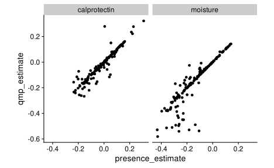
p2 <- qmp_presence_wide %>%
ggplot(aes(presence_p.value, qmp_p.value)) +
facet_wrap(~covariate) +
coord_fixed() +
scale_x_log10() +
scale_y_log10() +
geom_point()
p2
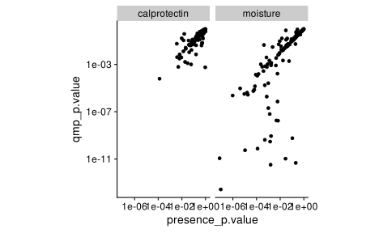
Overall, can see that most of the QMP correlations are highly similar to the presence correlations.
Faecal calprotectin
| genus | qmp_estimate | qmp_p.value | qmp_p.bh | presence_estimate | presence_p.value | presence_p.bh |
|---|---|---|---|---|---|---|
| Veillonella | 0.32 | 6.2e-05 | 0.010 | 0.3100 | 0.00013 | 0.021 |
| Streptococcus | 0.28 | 5.7e-04 | 0.034 | 0.0053 | 0.95000 | 0.980 |
| EscherichiaShigella | 0.28 | 6.2e-04 | 0.034 | 0.2300 | 0.00500 | 0.150 |
| Anaerostipes | -0.27 | 1.0e-03 | 0.041 | -0.1500 | 0.06000 | 0.380 |
| Gemmiger | -0.26 | 1.3e-03 | 0.041 | -0.1800 | 0.03100 | 0.310 |
| Oscillibacter | -0.26 | 1.6e-03 | 0.044 | -0.1900 | 0.01900 | 0.230 |
| Butyricimonas | -0.24 | 3.2e-03 | 0.073 | -0.2200 | 0.00620 | 0.150 |
| Fusobacterium | 0.23 | 3.9e-03 | 0.074 | 0.2100 | 0.00910 | 0.170 |
| Fusicatenibacter | -0.23 | 4.1e-03 | 0.074 | -0.2300 | 0.00390 | 0.150 |
| Alloscardovia | 0.22 | 6.6e-03 | 0.096 | 0.2200 | 0.00660 | 0.150 |
Moisture content
| genus | qmp_estimate | qmp_p.value | qmp_p.bh | presence_estimate | presence_p.value | presence_p.bh |
|---|---|---|---|---|---|---|
| Oscillibacter | -0.58 | 0 | 0 | -0.43 | 1.0e-07 | 7.5e-06 |
| Clostridium_IV | -0.54 | 0 | 0 | -0.26 | 1.6e-03 | 7.7e-03 |
| Blautia | -0.54 | 0 | 0 | -0.11 | 2.1e-01 | 3.5e-01 |
| Faecalibacterium | -0.53 | 0 | 0 | -0.18 | 2.8e-02 | 7.8e-02 |
| Ruminococcus | -0.53 | 0 | 0 | -0.43 | 1.0e-07 | 7.5e-06 |
| Fusicatenibacter | -0.51 | 0 | 0 | -0.36 | 1.1e-05 | 2.8e-04 |
| Coprococcus | -0.51 | 0 | 0 | -0.32 | 1.2e-04 | 1.4e-03 |
| Alistipes | -0.50 | 0 | 0 | -0.26 | 1.4e-03 | 7.2e-03 |
| Ruminococcus2 | -0.49 | 0 | 0 | -0.29 | 5.0e-04 | 3.8e-03 |
| Dorea | -0.49 | 0 | 0 | -0.14 | 1.1e-01 | 2.1e-01 |
Consider the calprotectin results. For some taxa (like Veillonella, EscherichiaShigella) the two estimates are very similar;for others like Streptococcus they are quite different.
Hypothesis: Correlations that are driven by differential prevalence will be less sensitive to bias than correlations that are not.
For the purposes of this analysis, zero observations will be treated as true zeros, which I expect to reduce the apparent impact of bias perturbation or calibration on the DA results relative to if we assumed zeros as indicating small positive abundances.
In order to perform a bias sensitivity analysis on the QMP profiles, we will calibrate (inverse-perturb) the relative abundances by the sampled bias vector, while keeping the total sum for the same constant, so that the total abundance of the same remains given by the fecal cell count.
# Returns a matrix with taxa as columns
sample_bias <- function(n, gsd, vcv, taxa_as = 'cols') {
stopifnot(isSymmetric(vcv))
stopifnot(n > 1)
n_taxa <- nrow(vcv)
gsd_log <- log(gsd)
bias <- MASS::mvrnorm(n, mu = rep(0, n_taxa), Sigma = vcv) %>%
t %>%
scale %>%
{. * gsd_log} %>%
exp
if (taxa_as == 'cols')
bias <- t(bias)
bias
}
#> x <- sample_bias(3, gsd = 3, phy_vcv)
#> x %>% apply(1, gm_sd) %>% head
#> x[1,] %>% qplot + scale_x_log10()
#> sample_bias(3, gsd = 3, phy_vcv, taxa_as = 'rows') %>% head
my_stat <- function(ps, otus) {
ps %>%
prune_taxa(otus, .) %>%
as_tibble %>%
with_groups(.otu, nest) %>%
mutate(
fit = map(data, ~cor.test(data = .x,
~ .abundance + faecal_calprotectin,
method = 'spearman', exact = FALSE, continuity = TRUE)),
fit = map(fit, broom::tidy)
) %>%
select(-data) %>%
unnest(fit)
}
#> my_stat(ps, 'Veillonella')
taxa_to_test <- c(
# low prevalence
'Veillonella', 'EscherichiaShigella', 'Fusobacterium',
# high prevalence
'Streptococcus', 'Anaerostipes', 'Fusicatenibacter'
)
reps_fit <- xfun::cache_rds({
reps %>%
mutate(
fits = map(bias,
~my_stat(
ps = calibrate(ps, .x, norm = 'keep'),
otus = taxa_to_test
))
) %>%
unnest(fits)
}, dir = '_cache/', file = 'reps_fit',
hash = list(reps, taxa_to_test))
plot_bias_sens <- function(reps, original, .otu) {
est_dist <- ggplot(reps, aes(estimate)) +
geom_histogram() +
geom_vline(xintercept = original$estimate, color = "darkred") +
geom_vline(xintercept = 0, color = "grey") +
labs(title = "Distribution of point estimates", x = "Estimate", y = "Count")
pval_dist <- ggplot(reps, aes(p.value)) +
geom_histogram() +
geom_vline(xintercept = original$p.value, color = "darkred") +
geom_vline(xintercept = 0.05, color = "grey") +
scale_x_log10() +
labs(title = "Distribution of p-values", x = "p-value", y = "Count")
est_dist / pval_dist +
plot_annotation(title = .otu)
}
original <- qmp_presence %>%
filter(.otu %in% taxa_to_test, test == 'qmp_calprotectin') %>%
with_groups(.otu, nest) %>%
rename(original = data)
reps_plots <- reps_fit %>%
with_groups(.otu, nest) %>%
rename(reps = data) %>%
left_join(original, by = ".otu") %>%
mutate(.,
plot = pmap(., plot_bias_sens)
) %>%
select(.otu, plot) %>%
deframe
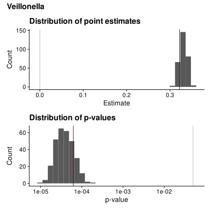
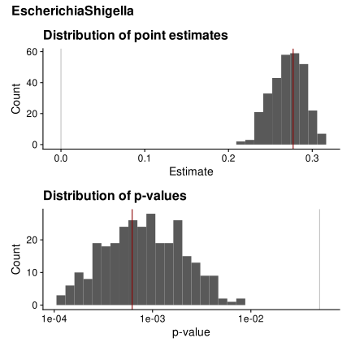
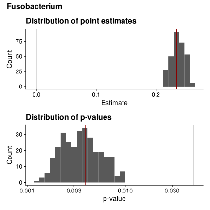
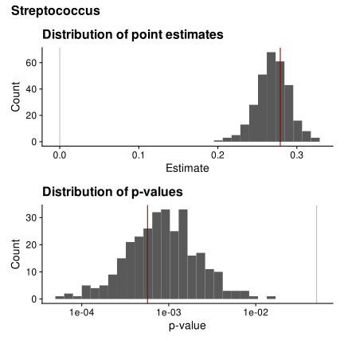
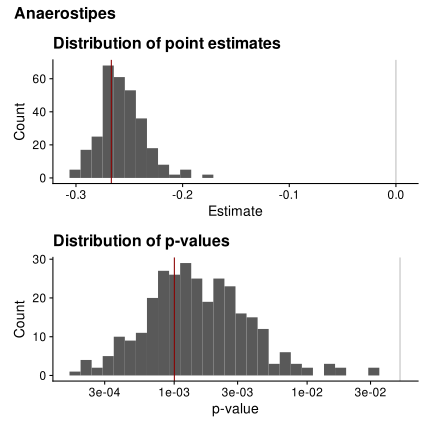
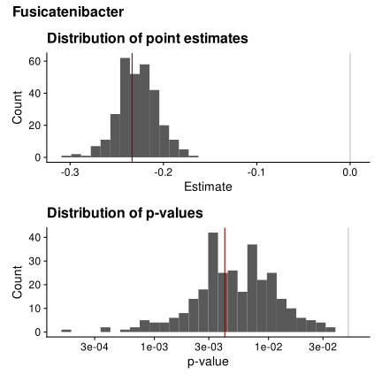
It isn’t clear from these plots that there is a difference in bias sensitivity between the two sets.